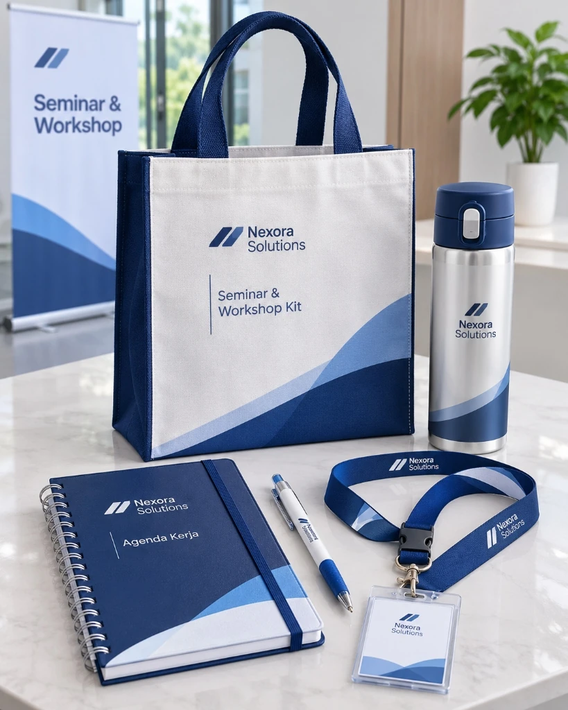

Goodie Bag untuk Welcome Kit Karyawan Baru

Goodie bag untuk welcome kit karyawan baru (onboarding kit) merupakan investasi budaya perusahaan (employer branding) yang memberikan kesan pertama mendalam bagi talenta baru di hari pertama mereka bergabung di organisasi.
Hari pertama bekerja sering kali diwarnai kecemasan adaptasi. Menerima paket sambutan yang tersusun rapi, elegan, dan fungsional di atas meja kerja bukan sekadar pemberian suvenir, melainkan bukti nyata perhatian manajemen terhadap kenyamanan dan kebanggaan tim baru.
📌 Ringkasan Inti Welcome Kit Onboarding:
- Welcome kit onboarding adalah investasi strategis tim People Operations untuk menumbuhkan rasa memiliki (sense of belonging) sejak hari pertama kerja.
- Komposisi kit harus membedakan secara tegas antara fasilitas kerja esensial (laptop, kartu akses, buku panduan SOP) dengan suvenir apresiasi personal (tumbler, hoodie, stiker, mug).
- Tas goodie bag berperan sebagai wadah penyatu yang harus berdimensi cukup lapang (35×40×10 cm) dan tahan menampung beban paket hingga 5 kg.
- Tabel matriks komposisi kit memudahkan tim HR merancang variasi paket sesuai tingkatan level jabatan (Staff, Manajerial, hingga C-Level).
- Manajemen pengadaan dengan stok buffer 15–20% menjamin kesiapan welcome kit bagi karyawan yang bergabung secara bertahap setiap bulan.
🚚 Ketentuan Layanan & Pengiriman: Produksi langsung dari workshop konveksi kami di Kota Malang, melayani pengiriman kilat ke seluruh 38 provinsi di Indonesia (Jawa, Sumatera, Kalimantan, Sulawesi, Bali, hingga Papua). Minimum pemesanan mulai dari 50 pcs dengan garansi 100% ganti baru untuk cacat produksi. Pelajari ketentuan lengkap di halaman Syarat & Ketentuan Pemesanan serta panduan Alur Pemesanan Resmi.
1. Membedakan Fasilitas Kerja Esensial vs Suvenir Apresiasi
Dalam merancang paket welcome kit onboarding, bagi isi paket ke dalam dua kategori yang seimbang:
1. Fasilitas Kerja Esensial (Work Tools)
Peralatan yang langsung digunakan karyawan di minggu pertama adaptasi tugas.
- Lanyard & Holder ID Card: Tali lanyard berlogo dengan jepitan kulit atau logam kokoh.
- Buku Agenda Kerja Eksklusif: Format garis dotted / ruled untuk catatan pembagian jobdesk.
- Pulpen Tinta Gel Metal: Sentuhan ergonomis dengan bobot solid di genggaman.
- Flashdisk Enkripsi Kantor: Tempat penyimpanan file template kerja standar perusahaan.
2. Suvenir Budaya & Gaya Hidup (Culture Merch)
Perlengkapan yang menumbuhkan rasa bangga menjadi bagian dari keluarga besar korporat.
- Tumbler Stainless Suhu: Menjaga hidrasi di meja kantor sekaligus mengurangi sampah plastik.
- Kaos Polo / Hoodie Bordir: Pakaian kasual beridentitas perusahaan untuk dresscode casual Friday.
- Kartu Ucapan Sambutan dari Direksi: Kartu bertekstur tebal dengan pesan personal motivasi karir.
- Stiker Laptop Die-Cut: Ilustrasi ikonik nilai-nilai budaya kerja perusahaan.

Tabel Komposisi Welcome Kit Onboarding per Level Jabatan
Berikut panduan komposisi paket suvenir onboarding karyawan yang seimbang antara nilai fungsional dan anggaran perusahaan:
| Jenjang Karyawan | Model Tas Penyimpan | Komposisi Item Perlengkapan | Pesan Budaya Kerja |
|---|---|---|---|
| Staff & Entry Level | Tote Bag Kanvas Twill Gusset Bawah | Notebook dot-grid, pulpen metal, lanyard satin sablon, tumbler BPA-free, sticker pack. | Penyambutan hangat, kesiapan belajar, semangat kolaborasi tim. |
| Spesialis & Senior Engineer | Tote Bag Laptop D300 Berbusa / Kanvas Marsoto | Buku catatan hardcover, wireless mouse, flashdisk OTG 64 GB, tumbler kopi termos, kaos polo corporate. | Pengakuan keahlian teknis, fasilitas kerja mandiri & produktif. |
| Manager & Head of Dept | Box Bag Kanvas Resleting + Kompartemen Dokumen | Agenda organizer kulit magnet, pulpen rollerball Parker style, powerbank nirkabel, tumbler stainless vacuum LED. | Amanah kepemimpinan, visi strategis, kebanggaan memimpin unit. |
2. Manajemen Stok HR & Alur Distribusi Karyawan Bertahap
Pengadaan welcome kit paling efisien dilakukan dengan strategi stok penyangga (buffer inventory):
- Pesan Kebutuhan Tahunan: Menghitung perkiraan rekrutmen tahun berjalan dan memesan dalam jumlah 100–300 paket menghasilkan penghematan biaya satuan tas hingga 30% dibanding memesan eceran per bulan.
- Desain Universal Tanpa Tanggal: Jangan mencantumkan tahun pada tas agar stok aman disimpan di ruang logistik HR dan tetap relevan digunakan sepanjang waktu.
- Wadah Tas Kerja yang Bernilai Pakai: Pilih goodie bag kanvas premium berresleting yang kokoh dan fungsional untuk membawa dokumen kerja saat pergi dan pulang kantor.
Untuk kegiatan internal kantor lainnya yang bersifat formal berkala, baca juga ulasan kami tentang pilihan goodie bag untuk rapat dan acara internal kantor.
3. Aspek Psikologis & Penanaman Nilai Budaya Perusahaan
Hari pertama kerja sering kali dipenuhi rasa cemas bagi karyawan baru. Menemukan goodie bag selamat datang yang tertata rapi di atas meja kerja mereka—lengkap dengan kartu ucapan selamat datang dari CEO atau pimpinan departemen—menciptakan dampak emosional positif yang kuat (first-day wow moment).
Karyawan baru cenderung memotret paket onboarding mereka dan mengunggahnya ke media sosial profesional seperti LinkedIn, yang secara organik memperkuat reputasi Employer Branding perusahaan Anda di mata calon talenta terbaik. Rancang tas kantor berwibawa melalui konsultasi bersama tim spesialis kami di goodie bag kantor custom serta tinjau pilihan tas korporat di goodie bag corporate.
Pertanyaan Umum Seputar Welcome Kit Onboarding (FAQ)
Buat Welcome Kit Karyawan Baru yang Menginspirasi
Rancang starter pack onboarding perusahaan Anda bersama tim ahli kami. Dapatkan penawaran paket lengkap tas kanvas, hoodie, dan aksesoris kantor siap bagi.
Konsultasi Welcome Kit via WhatsApp (+62 821-3108-7971)Panduan Terkait di Klaster Seminar & Pelatihan